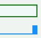

linkタグのmedia属性で複数のメディアを指定された外部スタイルシート内の、@media宣言によって括られた範囲内のスタイル指定を認識しない。
この文書内のlinkタグ：
<link rel="stylesheet" type="text/css" href="b013.css" title="専用" media="screen,print">
b013.css内の記述（一部）：
@media screen {
h3 {
border-right: 10px solid #1e90ff;
}
}
screenメディアでのみ、h3要素に右ボーダーが表示されます。
ページ右上部のスクリーンショットです。下段の青いボーダーがh3要素のものです。
Moz1.0での表示
Opera6.05での表示
このバグを利用すれば、Operaに特定のスタイルを認識させないようにすることができます。
外部スタイルシートの@mediaでのメディア指定がlink要素のmedia属性でのメディア指定をすべて含むようにすればこのバグを回避できます。（2002-10-12追記）
<link rel="stylesheet" type="text/css" href="b013.css" title="専用" media="screen,print">
b013.css内の記述（一部）：
@media screen,print {
h3 {
border-right: 10px solid #1e90ff;
}
}
また、外部シート内を @media all としても、バグを回避できます。
Opera6.05では不具合の発生を確認しました。Opera7.0では標準・互換モードともに不具合の発生は確認されませんでした。